Cordova3.x Fundamentals
(aka PhoneGap)
Created by rensanning / @rensanning
What is Cordova ?
“Apache Cordova is an open source framework for building cross-platform native applications using standard web technologies such as HTML, CSS and JavaScript.”
PhoneGap vs Cordova ?
PhoneGap is a distribution of Apache Cordova。
- WebKit -- Chrome/Safari
- Linux -- Ubuntu/CentOS
Pros and Cons
Pros
- Open Source and Free
- Web Development Skill Reuse
- Platform Support
- Plugin Architecture
Pros and Cons
Cons
- Performance
- Browser Support
- Web LAF（Look & Feel）
Architecture
Native Application Architecture
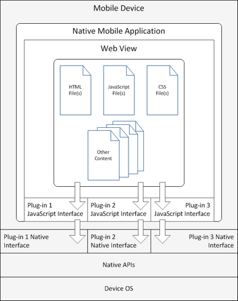Architecture
Streamlined plugin architecture
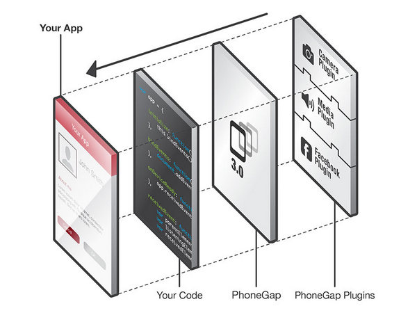Architecture
Streamlined plugin architecture
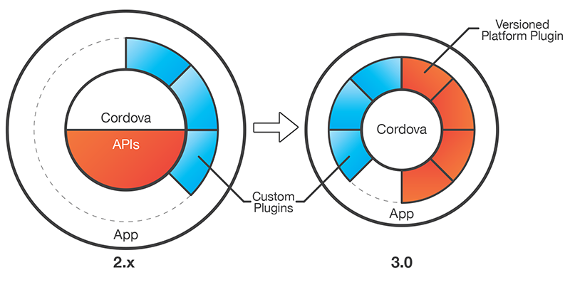Architecture
Native Bridge
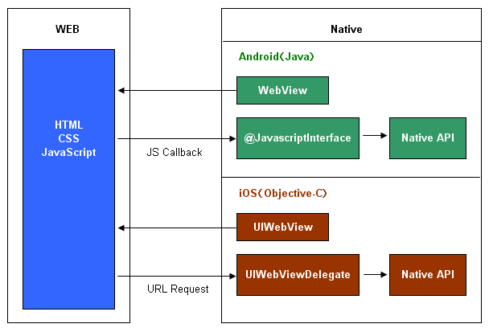Platform Support
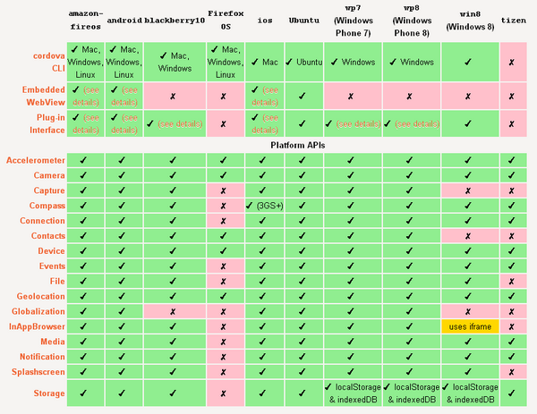Installing Cordova
Requirements
Android（JDK/Ant/Android SDK/ADT）、iOS(Xcode)、Node.js、Git
Install
npm install -g cordova
Cordova CLI
- Create： Generate folder skeleton
- Build： Generate mobile native apps
- Deploy： Transfer to emulators and Devices
Cordova CLI
cordova create MyApp com.rensanning.cordova MyApp
cd MyApp
cordova platforms add android
cordova plugin add org.apache.cordova.device
cordova build android
cordova emulate android
Project Structure
myApp/ |-- config.xml |-- hooks/ | | |-- before_xxx/ | | `-- after_xxx/ |-- merges/ | | |-- android/ | | `-- ios/ |-- platforms/ | |-- android/ | `-- ios/ |-- plugins/ | |-- org.apache.cordova.console/ | `-- org.apache.cordova.device/ |-- www/ | |-- css/ | |-- img/ ` |-- js/ `-- index.html
config.xml
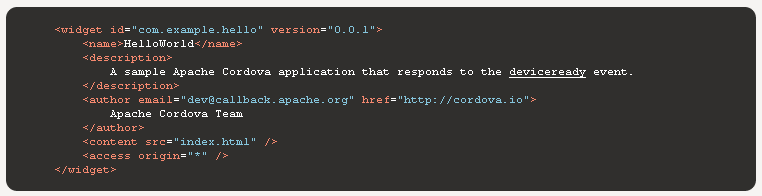Cordova APIs
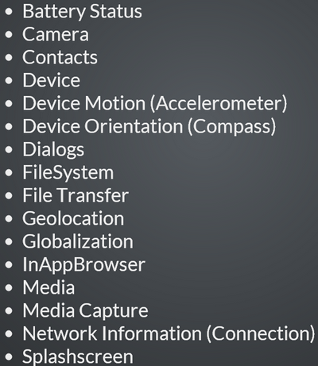Cordova Events
- deviceready
- pause
- resume
- backbutton
- menubutton
- searchbutton
- startcallbutton
- endcallbutton
- volumedownbutton
- volumeupbutton
- online
- offline
Debugging Applications
- Browser
- Native
- Remote
Apache Ripple
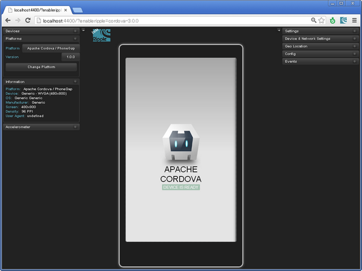weinre
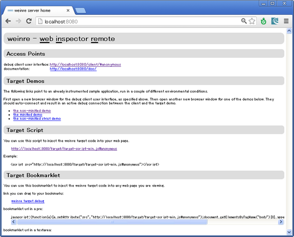UI Framewrok
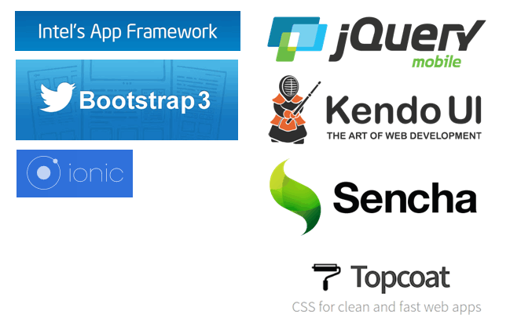Cloud-based Build Services
- PhoneGap Build
- AppBuilder/Icenium
- Appery.io/Tiggzi
- Monaca
- SAE云窗调试器
Reference
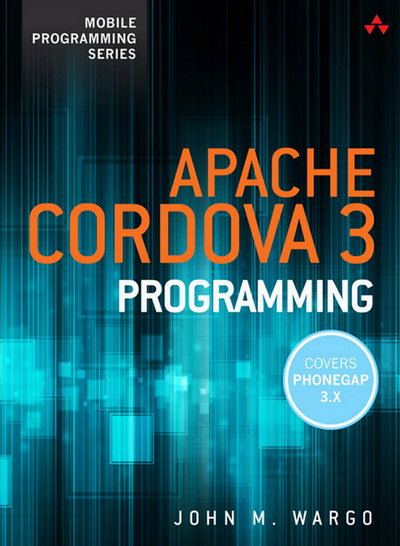Reference
- Cordova – in-depth analysis
- CordovaAPIs and instruments
- Devgirl's Weblog
- iPhone Dev Log
- PhoneGap School
- Cordova (aka PhoneGap) 3.x Tutorial
- What to expect in PhoneGap 3.0
- PhoneGap, Cordova, and what’s in a name?
- Comparing Titanium and PhoneGap
- IBM Worklight and Phonegap Comparison
- Pros and Cons of the Top 5 Cross-Platform Tools